<ion-header>
    <ion-navbar ion-fixed transparent align-title="center" color="dark">
        <button ion-button left menuToggle>
              <ion-icon class="icon ion-home custom-icon" name="menu"></ion-icon>
        </button>

        <ion-title>  
            <ion-grid style="margin-top: 10px;">
                <ion-row style="justify-content: center;">
                        <div>
                                                    
                        </div>
                    <div style="margin-top: 5px; padding-left: 5px;">SPOTSWOPPER</div>
                </ion-row>
            </ion-grid>
        </ion-title>
              
        <ion-buttons end>
            <button ion-button icon-only (click)="openSecondModal()">
                <ion-icon  class="icon ion-home custom-icon" name="notifications"></ion-icon>
            </button>
        </ion-buttons>
              
        <ion-buttons end>
            <button ion-button icon-only (click)="openModal()">
                <ion-icon name="options"></ion-icon>
            </button>
        </ion-buttons>
    </ion-navbar>
</ion-header>


<ion-content #content class="contentdiv">
  <div  #map id="map">
  </div>

   <button ion-fab class="fabbi" (click)="fabclicked()">
       
   </button>

    <div class="bottombuttonscontainer">

        <ion-grid class="bottomgrid">
        
            <ion-row  style="justify-content: center;" >
                <ion-col class="testclass" (click)="openOptions(1)">
                    <br>My Spots
                </ion-col>

                <ion-col class="testclass">
                        <br>Map Layers
                </ion-col>

                <ion-col class="testclass" (click)="openOptions(3)">
                    <br>Off Grid
                </ion-col>

                <ion-col class="testclass" (click)="openOptions(4)">
                    <br>Search Spot
                </ion-col>
            </ion-row>


            <ion-row class="layersbelow" >

                <br>
                <div *ngIf="showOne"  >
                    <ion-list style="width: 98vw;">
                        <button no-lines style="background: transparent;color: white" detail-none (click)="expandItem(item)" ion-item *ngFor="let item of items">
                            <ion-thumbnail item-start>
                                
                            </ion-thumbnail>
                            <h2>{{item.title}}</h2>
                            <expandable [expandHeight]="itemExpandHeight" [expanded]="item.expanded">
                              Hello people
                            </expandable>
                                <button ion-button clear item-end  color="primary" >
                                    View
                                </button>
                        </button>
                    </ion-list>
                </div>

                <div *ngIf="showThree" >
                    <br>
                        <ion-grid style="width: 97vw;"><br>
                            <ion-row style="text-align:center;">
                                <ion-col >
                                    <button ion-button block color="redlike"                                 (click)="openSaveModal()">
                                            Save New Map
                                    </button>
                                </ion-col>
                                <ion-col >
                                    <button ion-button block color="greytwo">
                                                                                               Go Offline</button>
                                </ion-col>     
                            </ion-row>
                        </ion-grid>                    
                </div >

                <div *ngIf="showFour">
                    <br><br>
                        <ion-searchbar animated=true
                        placeholder="Search all Spots"
                        [(ngModel)]="myInput"
                        [showCancelButton]="shouldShowCancel"
                        (ionInput)="onInput($event)"
                        (ionCancel)="onCancel($event)">
                    </ion-searchbar>
                    <ion-list>
                            <ion-item *ngFor="let spot of spotList" (click)="goToSpot(spot, i)">
                                    <h2> {{ spot.pintype }} </h2>
                                    <h3> Distance away: <strong>{{ spot.dist }} km away</strong> </h3>
                            </ion-item>
                    </ion-list>
                </div >


            </ion-row>
        </ion-grid>
        
    </div>

    <ion-select style=
        "position: absolute;
        height:0px;
        width: 0px;
        bottom:0vh;
        z-index: 5;" 
        (ngModelChange)="onChange()" [(ngModel)]="pinspotas" #mySelect>
        <ion-option>Private Spot</ion-option>
        <ion-option>Spot for Lease</ion-option>
        <ion-option>Spot for Sale</ion-option>
        <ion-option>Spot Purchased</ion-option>
        <!-- <ion-option>Not for Sale</ion-option> -->
        
    </ion-select>
    
</ion-content>
